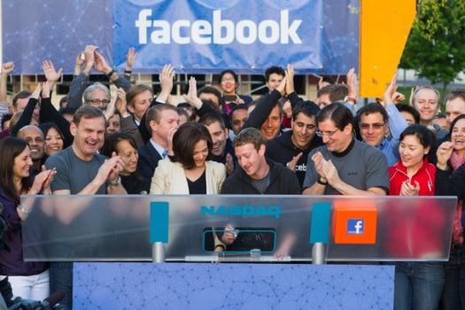

Facebook 的開源價值

Facebook 因為股價急挫，飽受多方評論家和媒體指責。但作為開源業界的一份子，Facebook 其實作出了不少貢獻，值得後進的企業學習。

▲ 圖1
Facebook 與很多企業一樣，使用了 LAMP (Linux/Apache/MySQL/PHP) 來架設服務。很多大型企業都是開源技術的使用者，卻並非開源技術的貢獻者。這些企業利用了開源技術提供了生產力，但卻沒有想過把這些技術加以改良後，再回饋給開源社群。但 Facebook 卻不一樣，以 PHP 為例，Facebook 研發出 HipHop for PHP 的執行環境，並改良 PHP 以增加其執行速度與效率。資料庫方面，Facebook 使用了 MySQL 來保存用戶的數據，並引進了 NoSQL 資料庫的技術，改良的成果已經被整合到 Apache Hadoop 計畫中的 Cassandra 和 HBase 之中。
數據分析方面 Facebook 使用的是開源的是 scribe，硬體上則把旗下數據中心和硬體規格以 Open Compute 方式公開。以往數據中心的設計屬於商業機密，Open Compute 將令更多的廠商可以參與有關設計，營運時有更好的能源效益。在 IPO 這件事上 Facebook 的確有不妥當之處，在財源充足的情況下上市集資仍然是一個謎團，但作為開源技術的使用者及貢獻者，Facebook 的確有不可抹殺的功勞。